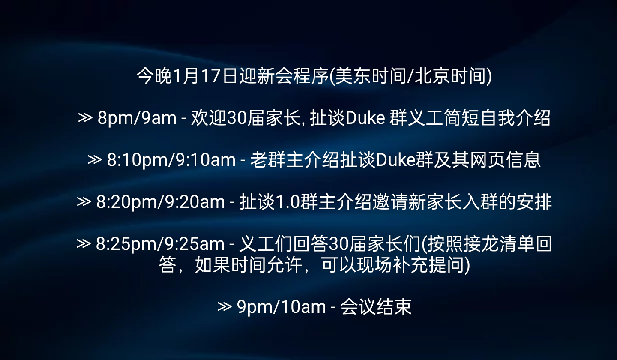
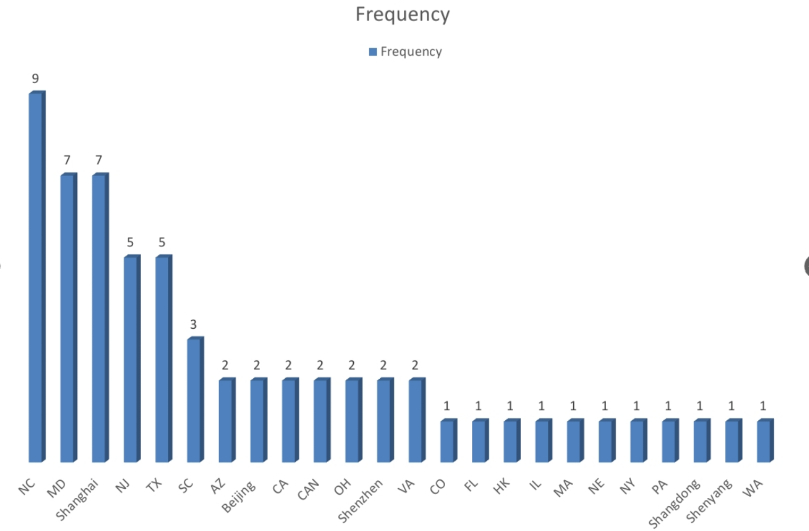
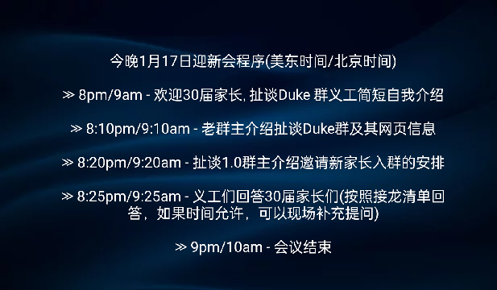
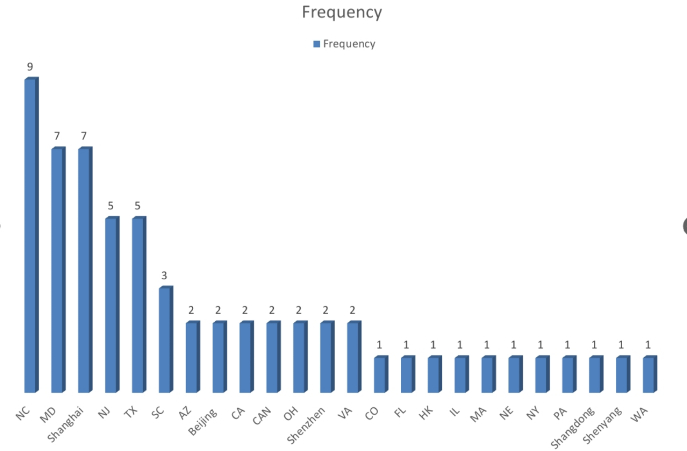

Q1: 扯谈Duke群是什么群?
Duke家长群。
Q2-VON-Xiaobing: 大一工学和文理学院的必修课是否一样？有哪些热门课需提前抢？大一选课策略。选宿舍和适配室友机制：选宿舍适配室友信息表格内容，什么时候提交，实际上学校会按所交表格信息进行匹配室友吗？可以自选室友吗?国际生VISA签证的银行资金证明具体要求?
具体专业课肯定不一样。比较热门的还是CS，Econ，Math等大课堂。选课策略一般建议循序渐进，特别是第一学期。可以选一门与以后所学专业有关的课程，其他的稍微轻松的人文需修课。室友不能自己直接互选，学校大概在五月底会发表格供学生填信息，但是也不用期望会完全匹配每个人的意愿，有时看上去就是随机组合的。询问家长:
群主和各位家长好！刚刚在忙，是我想麻烦问一下研究生入学前的存款证明需要冻资时长吗？
回答家长1:
你是问为了签证？
询问家长:
不对，是i20
询问家长:
儿子看学校网站上没有时长要求，但听学长说要求3个月的存款证明
询问家长:
Duke学校PDF文件
询问家长:
另外，说有这么份证明要银行签字填写，银行哪会填非本行的格式化的材料
回答家长1:
那这就是国内家长签证时的常规问题，无论本科还是研究生。群里国内家长都知道，说来听听[Grin]
询问家长:
因为这份文件与我们办本科申请时并没有要求提供，所以想问问大家申上杜克入学前是不是都填了这份文件
回答家长2:
不用
询问家长:
谢谢谢！太好了问题一有答案了！
询问家长:
这个是问题二
回答家长1:
[Chat History]
新生群问题，请问学长学姐们的家长，向大学申请I20表格时需要提交存款证明，这个存款证明是否要求冻结呢？
我记得是不用，开资产证明就行，证明有付学费的能力
回答家长3:
银行有格式化的存款证明，手机银行上就可以申请开具，用银行的格式证明就行
询问家长:
第二问也有答案了
这个群真给力！
回答家长4:
我们去年办没有需要冻结。就把打印的银行statement 银行签个字就好了
Q3-Xiaobing: 学年里有什么线下活动家长需要或者值得参加?
主要是Family Weekend 建议大家参加，了解熟悉学校。
Q4-Yi: 学费是怎样交的，一次付完一年？还是每月交?
一次或多次分期付，参考网页上的具体信息。
Q5-Xiaobing: Freshman 住宿经验， 什么物件有用没用。 Whole Foods能步行到吗？要自行车吗？Freshman开车的多不多?
有pack-list 可以参考，在网页上。Whole Foods 一步之遥。自行车可以有，但用处不大。第一年开车不多，主要是停车远不方便。
Q6-Sharon-Xiaobing: 学校里有啥工程相关的club可以参加？兄弟会要参加吗？有网球club吗？门槛高不高？工程学院的学生有没有时间参加这些活动？ Convocation有什么特别的活动吗？家长要不要参加?
与工程相关的活动可能会是， Duke Aerospace engineering，Robotics
有Duke Club Tennis
https://docs.google.com/forms/d/e/1FAIpQLSdbVna_liH-EY7OGW_2MJS1obIxMYffO-XM_XzJ4FalgtbNlw/viewform?fbclid=PAb21jcAPXSPBleHRuA2FlbQIxMQBzcnRjBmFwcF9pZA81NjcwNjczNDMzNTI0MjcAAafiuY5bCK4RnF4CdY4pLMwMnQ1wrfiTboS0cGZDq4oje8uK5KFjMZdj8oU_5Q_aem_MShLg5rcdA_t5cRJyrE_KA&utm_source=ig&utm_medium=social&utm_content=link_in_bio
https://groupme.com/join_group/109419601/FiOb69F8
Fraternities and sororities都是基于个人的兴趣，许多都已经脱离Duke正式的管理系统了。
新生Convocation本身没有什么特别，如果家长仍旧在学校，可以去观看，但是学校不正式邀请家长们。
Q7-Sharon: 大一大二转系去读BME专业的需要掌握什么级别的数学和物理知识?
专业敲定最晚在二年级结束时，所以前面谈不上转专业。如果到时会定BME 就是看看前面怎么具体安排。
BME 专业有专门的手册供详细阅读了解。
物理学phys141&142 for premed，phys151&152 Chem 101 for BME
数学 Multivariable Calculus，Linear
Q8-Xiaobing: 十月份的四天秋假，州外生都回家吗？还是会留在学校？ 十月底或十一月的family weekend, 家长们都会参加吗？主要是什么内容?
主要是Family Weekend 建议大家参加，了解熟悉学校。
建议Family Weekend 家长可以的话都参加，基本是广泛地了解熟悉学校，有一些讲座，也可以参观Duke Lemur Center。没有非常特别的菜单。学校会安排一场橄榄球🏈比赛。另外，扯谈Duke 群也会组织家长们聚会
Q9-Jing: 如果Pre-med，选课需要注意什么？有什么weed out课程吗？兄弟姐妹会对pre-med学生作用大吗？另外，学校的pre-health advising 效果怎样?
除草课程基本是有机化学。
Fraternities and sororities对pre-med track 学生没有作用。
咨询了一位25和28届的高年级双家长，觉得Health Professions Advising要很好地利用。不用的话，等于没有积极主动出击，选课和课程计划都可以咨询。 多关注和参加一些会议活动。杜克学生每学期有钱可以和老师吃饭聊天， 这个要好好珍惜， 每学期请老师吃饭， 互相了解， 有利于写推荐信。我家老大就每学期请老师吃饭， 不学医的老二就没听说过。不同赛道方式很不一样。 推荐信得看对学生了解多少，老师有时候不写推荐信有可能没有私交， 无从写起，医学院的推荐信还挺重要。尤其不打算GAP的学医学生， 怎样在考MCAT之前重要的知识点都学了， 怎样在毕业前满足医学院课程需要这都需要问advisor的。
Q10: 请问杜克的冰球队水平如何？大概是什么级别的?
一般水平，你家杜娃可能从小开始冰球训练和比赛，应该具备资格参加杜克冰球队，具体可以参考28届家长细雨的孩子情况。
Q11：申请Merit Scholarship奖学金需要什么条件？怎样申请？什么时候申请？
Duke学生，除了Robertson Scholarship外，其它的不用另外申请。Robertson Scholarship可以在第一学年中第二次申请，具体看其网页信息。
Q12-Tianluo：关于FOCUS和Constellations怎么选择？大多孩子选了哪个？体验是什么？觉得哪个更好？
Pre-med track 学生可能会选FOCUS，因为课程设置偏生物医学较多。FOCUS 的引人之处之一是大家可以住在一起，参考网页上的FOCUS扯谈群的讨论。大多数跟着Constellations走。
Q13：关于work-study，都是什么样的工作？在校园里吗？工资rate是多少？怎么申请？孩子在繁忙的学习中是否可以再做work-study？
所有校园内的工作，包括图书馆、实验室、OIT部门、WU餐饮等等。现在最低工资每小时$16.50。学生自己在学校内部的Joblist上找。很多孩子都在做，也是平衡的学习吧。
Q14：关于Loan，在financial aid estimate里提到的Loan是否无息？毕业后才开始有利息？
The Federal Government，State Governments/State Agencies和Private Lenders。学校主要是The Federal Government loan，至于Direct Subsidized还是unsubsidized要看你的FASFA申请的结果。Subsidized四年学习期间家庭不用付利息。


 


